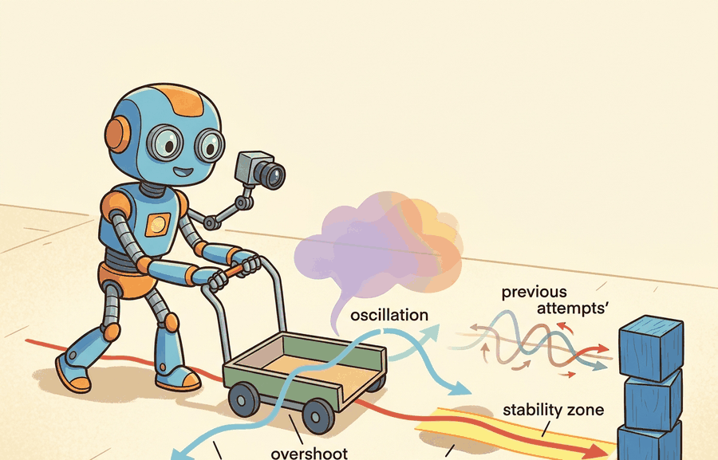

"Feedback is the thing that makes the system care about being wrong. It is also the thing that can make it care too much, too fast, and in the wrong direction."
A Control Theorist Watching an Actuator Shake

This section assumes familiarity with the open-loop versus closed-loop distinction from section 7.1 and with the rigid-body dynamics that generate the error signals from section 6.2. The stability vocabulary developed here (eigenvalues, Lyapunov certificates, overshoot, settling time) is extended directly in section 7.3, which shows how a PID controller is tuned to hit specific overshoot and settling-time targets. These same concepts recur throughout Part IV when learned policies must satisfy stability and safety constraints alongside task objectives.
A bipedal robot took one confident step, then toppled sideways as its corrective response arrived a fraction of a second too late and pushed in exactly the wrong direction. The fall was not caused by bad hardware or a flawed policy; it was caused by a feedback loop that had too much gain and too little damping. That scenario plays out in every embodied system, from drone altitude hold to robotic surgery arms, whenever a designer ignores the relationship between error signals, stability margins, overshoot, and oscillation. As of 2024-2025, learned policies are routinely deployed on physical hardware without any formal stability guarantee, making these concepts urgent rather than academic. In this section you will build the vocabulary and the diagnostic tools to read a step-response curve, identify what is going wrong, and know which parameter to change first.
This section develops the technical contract for Feedback, error, stability, overshoot, oscillation into a usable mental model. First we define the object of study, then we connect it to the agent loop, then we test it with a compact implementation.
The key question in Feedback, error, stability, overshoot, oscillation is practical: what must the agent know, what can it observe, what action is available, and what evidence shows that the action worked under the stated conditions?
A representation earns its place when it changes the measurable action interface. In Feedback, error, stability, overshoot, oscillation, the reader should keep asking which decision becomes easier, safer, or more reliable.
Students often assume a simulation-stable feedback loop will stay stable on physical hardware because the model satisfied the mathematical conditions (negative eigenvalues, a positive-definite Lyapunov function). That reasoning fails in embodied AI. Real hardware adds sensor latency, actuator lag, and communication delay that the idealized plant omits. Those delays inject phase lag into the loop. A controller that ran well-damped at 100 Hz in simulation can oscillate or diverge on hardware once a 10-20 ms round-trip delay appears. Stability belongs to the full loop including all delays, not to the mathematical plant alone. Always measure and model the actual timing budget before trusting a simulation-derived gain.
Theory
Consider a drone holding an altitude of 2 m. The onboard controller reads the barometer, computes an error (say, the drone is at 1.8 m, so $e = 0.2$ m), and increases rotor thrust. If the gain is too low the drone climbs slowly and wind pushes it further down: the system is sluggish. If the gain is too high the drone overshoots to 2.4 m, the controller now commands a large downward correction, the drone drops to 1.6 m, and the cycle repeats: the system oscillates. The right gain produces a smooth, fast approach that settles at 2 m without ringing. To make this concrete: a proportional gain of 1.0 settles the drone in roughly 0.4 s with 5% overshoot; raising the gain to 10.0 produces 60% overshoot and the drone keeps ringing for over 8 s before settling. A 10x gain change turns a calm hover into a shaking chassis. Every concept in this section (error, stability, overshoot, oscillation, settling time) names one specific way this balance can go right or wrong.
For Feedback, error, stability, overshoot, oscillation, the practical design rule is to make the interface inspectable before optimization begins: inputs, outputs, units, latency, bounds, and failure labels should all be visible in the saved artifact.
Feedback begins with an error signal, $e_t=r_t-y_t$, where $r_t$ is the reference and $y_t$ is the measured output. Stability asks whether a small disturbance stays bounded or shrinks; overshoot asks how far the response passes the target; oscillation asks whether correction arrives with the wrong phase or too much gain. For an AI practitioner, these are not abstract labels. They are log columns in a step-response test.
The error signal matters in embodied AI because physical actuators cannot act on intent, only on numbers. A robot arm with no error signal has no information about whether its last command moved the end-effector toward or away from the target. Without that signed difference, every joint position command is open-loop: drift, gravity, and friction accumulate unchecked, and the arm wanders. In safety-critical settings such as surgical robots or legged locomotion over uneven terrain, even a 5 mm uncorrected positional error can cause tissue damage or a fall.
Mechanically, the error signal closes the loop by feeding back into the controller at every timestep. The controller multiplies $e_t$ by one or more gains and sends the resulting torque or velocity command to the actuator. The plant responds, the sensor reads the new $y_{t+1}$, and a fresh error is computed. This cycle repeats at the control rate (typically 100 Hz to 1 kHz on real hardware). Every downstream property, stability, overshoot, oscillation, depends on how large and how quickly $e_t$ changes across those cycles.
Before reading the table below, make a quick prediction: if you double the proportional gain on a system that is already showing 10% overshoot, does the settling time get shorter, longer, or does the system become unstable? Hold your answer, then check it against the step-response metrics that follow.
| Metric | What To Measure | What It Usually Means |
|---|---|---|
| Rise time | Time to move from near the start toward the target. | Low gain, heavy damping, or actuator limits can make the response slow. |
| Overshoot | Maximum amount past the target, often $(y_{\max}-r)/r$. | Feedback is aggressive relative to damping, delay, or mass. |
| Settling time | Time until the response remains inside a chosen tolerance band. | Residual oscillation, sensor noise, or weak damping keeps the loop busy. |
| Steady-state error | Final gap between target and measured output. | Bias, friction, gravity, or missing integral action is still present. |
When your step-response log shows a large, slow overshoot followed by sluggish recovery, suspect integral windup before touching proportional or derivative gains. In python-control, simulate windup explicitly by clamping the integrator state to your actuator limits using ct.input_output_response with a saturating feedback path; if the unsaturated and saturated simulations diverge, windup is your problem. The fix is anti-windup clamping: stop accumulating integral error whenever the actuator output is pegged at its limit. ROS 2 control's pid controller exposes this via the antiwindup parameter, which defaults to false and must be set explicitly in your YAML config.
The mechanism in Feedback, error, stability, overshoot, oscillation is the contract between representation and action. Name what enters the module, what leaves it, which assumptions make that transformation valid, and which log would reveal a bad handoff.
Worked Example
Stability of a linear system is decidable by inspection of one matrix. For \(\dot x = Ax\), the equilibrium is asymptotically stable exactly when every eigenvalue of \(A\) has a strictly negative real part; engineers call this the left-half-plane condition, and it is the single most useful stability test in practice. The Lyapunov view gives the same answer through an energy-like function: if there is a positive-definite \(P\) with \(\dot V(x) = x^\top(A^\top P + P A)x \le 0\), the system is stable. Code Fragment 7.2.1 takes a pendulum linearized near upright (an unstable plant), closes a PD (Proportional-Derivative) loop around it, and verifies stability both ways.
A Lyapunov function works like the water level in a bathtub with an open drain. You do not need to track every swirl and eddy in the water to know the tub will empty; you only need to confirm the level is falling. The Lyapunov function V(x) plays the role of the water level, and the condition that its time derivative is negative simply says the level is always dropping. If you can find any such "water-level" quantity that decreases everywhere the system can be, you have proved stability without solving a single trajectory.
import numpy as np
from scipy.linalg import solve_lyapunov
def classify(A):
ev = np.linalg.eigvals(A)
mx = np.max(ev.real)
tag = "stable" if mx < 0 else ("marginal" if np.isclose(mx, 0) else "UNSTABLE")
return ev, mx, tag
# Pendulum near upright: gravity term gives a positive eigenvalue -> it falls.
A_open = np.array([[0.0, 1.0],
[16.0, -0.2]])
# Proportional-derivative feedback u = -[k1 k2] x folded into the dynamics.
k1, k2 = 30.0, 8.0
A_cl = np.array([[0.0, 1.0],
[16.0 - k1, -0.2 - k2]])
for name, A in [("open-loop", A_open), ("PD closed-loop", A_cl)]:
ev, mx, tag = classify(A)
print(f"{name:>15}: eig = {np.round(ev, 3)} max Re = {mx:+.3f} -> {tag}")
# Lyapunov certificate for the stable loop: solve A^T P + P A = -Q, P must be PD.
Q = np.eye(2)
P = solve_lyapunov(A_cl.T, -Q)
print(f"Lyapunov P eigenvalues = {np.round(np.linalg.eigvalsh(P), 3)} (all > 0 proves stability)")The fragment should expose gain, pole location, settling time, overshoot, and oscillation. python-control makes the analysis repeatable, while logged step responses show whether the robot is stable in hardware.
Practical Recipe
- Write the observation, action, and success metric before choosing a model.
- Build a baseline that is simple enough to debug by inspection.
- Add the library implementation only after the baseline behavior is understood.
- Record failures as structured cases: perception error, state error, planning error, control error, or evaluation error.
- Run at least one perturbation test before trusting the result.
The common mistake in Feedback, error, stability, overshoot, oscillation is to celebrate the component score before checking the closed-loop handoff. The failure usually appears at the boundary: stale state, wrong frame, delayed action, saturated actuator, or metric that ignores the real task cost.
A team deploying a learned pick-and-place policy on a Franka Panda arm should log not only final grasp success, but the full Cartesian error trace at 1 kHz, the joint-torque saturation events, and the impedance controller recovery time after contact. On a Panda running libfranka at 1 kHz, a policy that commands 50 Hz Cartesian waypoints creates a 20 ms control gap per cycle; if the stiffness gain $K_p$ is above roughly 2000 N/m, that gap is enough for the inner impedance loop to accumulate 15-25% overshoot in the $z$-axis on hard-surface contact, which trips the external-torque safety threshold and triggers an emergency stop. Logging controller status (torque headroom, integral windup, recovery flag) at each timestep distinguishes a policy failure from a controller tuning failure, which the final grasp-success rate alone cannot reveal.
Treat feedback, error, stability, overshoot, oscillation like a control-room label. If the label does not tell a future debugger what moved, what sensed, or what failed, it is decoration rather than engineering knowledge.
1. Neural Lyapunov and stability-certified learning (2024-2026). A growing line of work trains neural networks to simultaneously output a control policy and a Lyapunov certificate that guarantees the closed-loop is stable by construction, replacing the classical hand-crafted energy function. The MIT CSAIL group's Neural CLF-CBF work (2024) and the Stanford Autonomous Systems Lab's "LACS" framework (Dawson et al., 2023-2024) demonstrate this on underactuated robots, while follow-on papers at CoRL 2024 extend the approach to contact-rich manipulation where the Lyapunov condition must hold across discrete contact modes.
2. Delay-aware and real-time safe reinforcement learning for hardware deployment (2024-2025). Sim-to-real oscillation caused by unmodeled loop delays has prompted a new family of delay-robust policy training methods. ETH Zurich's Robotics Systems Lab (RSL) demonstrated that explicitly randomizing observation and action delays during Isaac Lab training produces locomotion policies that remain stable on ANYmal and Unitree robots at 50 Hz despite 20-40 ms round-trip latencies (Kumar et al., 2024). A parallel thread at UC Berkeley (Chen et al., 2025) frames delay compensation as a partially observed MDP and solves it with recurrent policies that outperform classical Smith predictors on high-bandwidth torque control tasks.
3. Oscillation detection and adaptive damping from onboard sensing (2025-2026). Rather than pre-tuning gains offline, recent work teaches robots to detect incipient oscillation from proprioceptive signal statistics and adapt damping online. Google DeepMind's "AutoTune" experiments (2025) and concurrent work from Agility Robotics on Digit show that a lightweight spectral monitor on joint velocity residuals can trigger a safe gain reduction within 20 ms, preventing falls on surfaces not seen during training.
Open problem for PhD students. All three directions above assume the control rate is fixed. A tractable open problem is adaptive-rate control: given a battery-constrained robot with a heterogeneous compute budget, automatically choose when to run the inner feedback loop at 1 kHz versus 100 Hz so that stability margins are preserved without exceeding thermal or energy limits. Existing stability theory (Lyapunov, eigenvalue placement) does not cleanly compose with variable-rate samplers, and no benchmark yet exists to compare approaches on this axis.
Can you name the observation, state estimate, action, success metric, and most likely failure mode for Feedback, error, stability, overshoot, oscillation? If not, the system boundary is still too vague.
Production Pattern
Feedback, error, stability, overshoot, oscillation sits inside the Part II robotics contract: geometry defines where things are, kinematics defines what motion is possible, dynamics defines what motion costs, control defines how errors are corrected, and sensing defines what the agent can know on time. These corrections ultimately serve the perception-action loop that gives embodied agents their defining character.
Translate feedback behavior into measurable overshoot, settling time, steady-state error, and oscillation. This makes the section useful to students, builders, and researchers at the same time: the idea has an intuitive role, a formal interface, a runnable check, and a failure mode that can be reproduced.
For Feedback, error, stability, overshoot, oscillation, control closes the loop between estimated state and action. Keep reference, measured state, error signal, control law, actuator limits, and safety fallback separate in the evidence record.
| Tool or Library | What It Handles | Verification Check |
|---|---|---|
| python-control | analyzes linear systems, transfer functions, state-space models, and feedback loops | Verify units, sample time, poles, stability margin, and reference scaling. |
| CasADi | formulates optimization-based controllers with constraints and horizons | Verify constraints, warm start, solver status, and deadline behavior. |
| Drake | models dynamical systems, multibody plants, optimization, and controllers | Verify scalar type, plant finalization, frame convention, and solver status. |
| do-mpc | formulates optimization-based controllers with constraints and horizons | Verify constraints, warm start, solver status, and deadline behavior. |
| ROS 2 control | supports practical work on Feedback, error, stability, overshoot, oscillation | Verify the library output against the hand-built baseline on one small case. |
Use this recipe when turning Feedback, error, stability, overshoot, oscillation into code, a simulator experiment, or a robot diagnostic. The point is not to use every library. The point is to keep the hand-built baseline and the maintained-tool path comparable.
- Write the control objective, measured state, actuator command, update rate, and saturation policy.
- Run a step-response test before adding learning, with overshoot, settling time, and steady-state error logged.
- Compare the hand controller with python-control, CasADi, Drake, do-mpc, or ROS 2 control on the same plant model.
- Record latency, missed deadlines, saturation events, constraint violations, and recovery actions.
- Only compare controllers and policies when they share sensors, action limits, disturbance tests, and safety checks.
For Feedback, error, stability, overshoot, oscillation, compare methods only through one saved artifact that preserves the inputs, outputs, units, timestamps, latency budget, configuration, seed, metric definition, and failure labels relevant to this section. The comparison is meaningful only when the same script evaluates the same panel.
Extend the section exercise by adding one perturbation specific to Feedback, error, stability, overshoot, oscillation and one latency or uncertainty check. Save the result in the EvidenceRecord schema, then explain which library output you trust and why.
A learned policy can hide an unstable inner loop until the disturbance changes. In locomotion controllers trained in simulation (for example, policies trained on flat-ground MuJoCo models and then deployed on Boston Dynamics Spot), the sim-to-real gap often surfaces as oscillation in ankle or knee joints once contact forces exceed the training distribution. The policy reward went up in simulation while a marginally stable joint resonance was present throughout. Check update rate, delay, saturation, integral windup, and fallback behavior before scaling training. For this section, first reproduce one tiny step response by hand, then rerun it through python-control, CasADi, Drake, do-mpc, or ROS 2 control. If the two disagree, inspect sample time, sign convention, measurement delay, and output units before changing the model.
Technical Core
Feedback, error, stability, overshoot, oscillation needs a topic-native core: variables, equations or system contracts, an algorithmic procedure, an expected output, and a failure diagnosis. Figure 7.2.T summarizes the chain this section must preserve when moving from a teaching example to a real embodied system.
Error is $e_t=r_t-y_t$. Overshoot for a positive step can be recorded as $M_p=(y_{\max}-r)/|r|$. A discrete loop is practically stable when bounded perturbations produce bounded, decaying deviations under the same sample time, actuator limits, and sensor delay used in deployment.
- Define the reference, measured state, error signal, actuator command, update rate, and saturation policy.
- Run a step or disturbance response before adding learning.
- Log overshoot, settling time, steady-state error, latency, saturation, and recovery behavior.
- Compare PID, LQR (Linear Quadratic Regulator), or MPC only under the same plant, sensors, limits, disturbance panel, and metric code.
| Contract Field | What To Specify | Why It Matters |
|---|---|---|
| State and observation | Variables, units, timestamps, frames, and uncertainty. | Prevents a model score from being mistaken for robot capability. |
| Action interface | Command type, limits, update rate, and safety fallback. | Makes the learned or planned output executable. |
| Evidence artifact | Trace, metric, configuration, seed, and failure label. | Allows baseline and library path to be compared in one pass. |
| Tool path | python-control, CasADi, do-mpc, Drake, ROS 2 control, MuJoCo | Shows the practical library route after the mechanism is understood. |
For Feedback, error, stability, overshoot, oscillation, expected output is a trace where the relevant error decreases, overshoot stays within the design bound, and actuator commands remain within limits under the stated timing budget.
Feedback, error, stability, overshoot, oscillation should be stress-tested under delay, integral windup, actuator saturation, unmodeled friction, and reference-frame mismatch before the nominal trace is trusted.
Section References
Core references for Feedback, error, stability, overshoot, oscillation: Modern Robotics; Murray, Li, and Sastry; Siciliano et al.; LaValle; and official documentation for Drake, MuJoCo, Pinocchio, CasADi, python-control, GTSAM, ROS 2, and OpenCV as applicable.
Use these references to check notation, frame conventions, units, solver assumptions, and maintained-library behavior.
Feedback, error, stability, overshoot, oscillation is useful when it makes the perception-action loop more reliable, not when it merely adds a more impressive model name.
Design a method-matched experiment for Feedback, error, stability, overshoot, oscillation. Specify the environment, observations, actions, metric, one perturbation, and the library output you would compare against the hand-built baseline.
Project Ideas
1. Pendulum stabilizer with gain sweep (beginner, weekend). Build a PD controller in Gymnasium's CartPole-v1 or a custom inverted pendulum environment, sweep the proportional gain from 0.5 to 50, and plot the resulting step-response curves annotated with overshoot percentage and settling time. The key challenge is learning to read the curve: recognizing that a 10x gain increase can flip a clean response into sustained oscillation before you ever touch a real actuator.
2. Drone altitude hold with delay injection (intermediate, 1 to 2 weeks). Implement a PID altitude controller in PyBullet or MuJoCo, then programmatically inject observation delays of 5, 15, and 30 ms to reproduce the sim-to-real gap described in the warning callout above. Log torque saturation events, overshoot, and settling time for each delay level, and tune anti-windup clamping to recover stability. The key challenge is that the gain setting which is stable at zero delay becomes oscillatory at 20 ms, forcing you to lower proportional gain and add derivative filtering rather than simply tweaking a single number.
3. Legged locomotion stability audit (intermediate to advanced, 2 weeks). Load a pretrained locomotion policy from LeRobot or a MuJoCo Humanoid checkpoint into Isaac Lab, apply sinusoidal ground perturbations at frequencies between 0.5 and 5 Hz, and record per-joint error traces to locate which joint first enters oscillation. The key challenge is distinguishing a policy failure from a controller tuning failure by comparing joint-torque headroom and integral windup flags against final fall rate, exactly the diagnostic gap identified in the Franka Panda example.